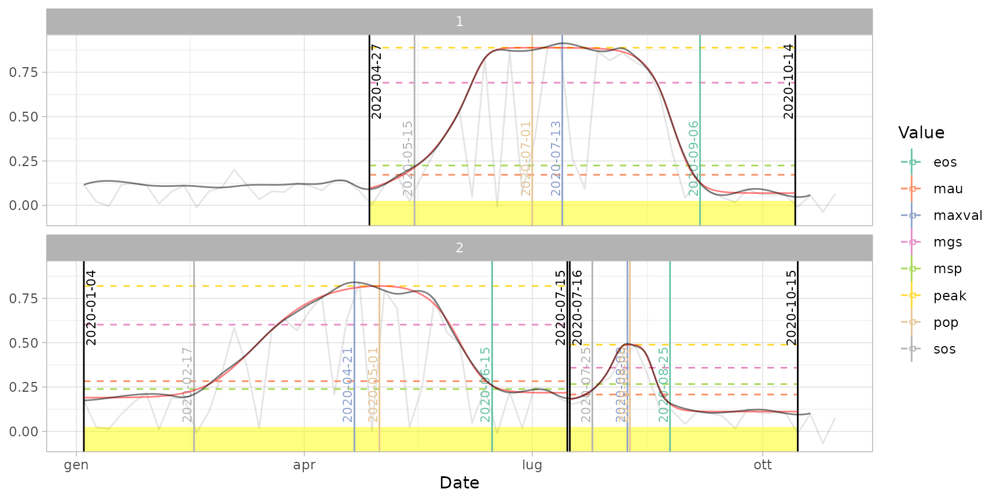
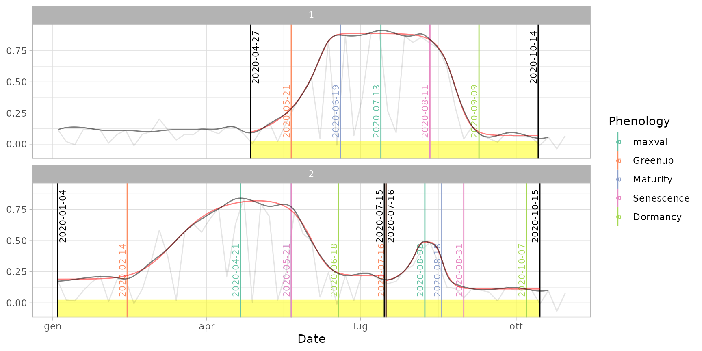
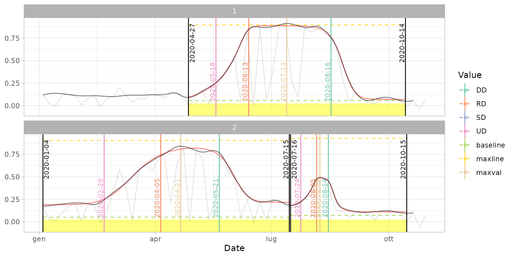

Extract phenological metrics from a fitted time series.
extract_pheno(data, method = "trs", trs = 0.5, ...)
| data | List of fitted time series as generated by function |
|---|---|
| method | Thresholding method among |
| trs | Argument passed to |
| ... | Additional arguments passed to |
A data table with the following fields:
id: the time series ID (see s2ts);
year: the year (integer);
cycle: the cycle ID (integer);
begin, end, maxval: the dates of begin, end and maximum value in
the cycle as computed by cut_cycles();
other phenology metrics, depending on method:
if method = "trs" or "derivatives": sos, eos, los, pop,
mgs, rsp, rau, peak, msp, mau (see
phenopix::PhenoTrs() or phenopix::PhenoDeriv());
if method = "gu": UD, SD, DD, RD, maxline, baseline,
prr, psr, plateau.slope (see phenopix::PhenoGu());
if method = "klosterman": Greenup, Maturity, Senescence,
Dormancy (see phenopix::PhenoKl()).
Luigi Ranghetti, PhD (2020) luigi@ranghetti.info
# Load input data data("cf") data("ts_filled") # used for plots # Default extraction ("trs" method with 50% threshold) dt_pheno <- extract_pheno(cf) plot(ts_filled, fitted = cf, pheno = dt_pheno, plot_dates = TRUE)# \donttest{ # Customize parameters (e.g. "derivatives" method with 30% threshold) dt_pheno_2 <- extract_pheno(cf, method = "derivatives", trs = 0.3) plot(ts_filled, fitted = cf, pheno = dt_pheno_2, plot_dates = TRUE)# Other methods: Klosterman dt_pheno_kl <- extract_pheno(cf, method = "klosterman") plot(ts_filled, fitted = cf, pheno = dt_pheno_kl, plot_dates = TRUE)# Other methods: Gu dt_pheno_gu <- extract_pheno(cf, method = "gu") plot(ts_filled, fitted = cf, pheno = dt_pheno_gu, plot_dates = TRUE)# }